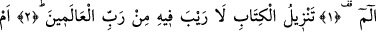
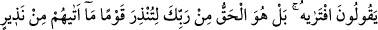
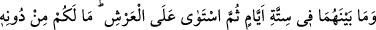
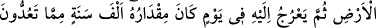
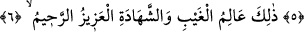

ALLAH
HER İŞİ DÜZENLEYİP
YÖNETİR
Rahmân ve Rahîm (olan) Allâh’ın adıyla.
1. Elif. Lâm. Mîm.
2. Bu Kitab’ın, âlemlerin Rabbi tarafından indirilmiş olduğunda asla şüphe yoktur.
3. “Onu Peygamber kendisi uydurdu” diyorlar öyle mi? Hayır! O, senden önce
kendilerine hiçbir uyarıcı (peygamber) gelmemiş bir kavmi uyarman için -doğru yolu
bulalar diye- Rabbinden gönderilen hak (Kitap) tır.
4. Gökleri, yeri ve bunların arasındakileri altı günde (devirde) yaratan, sonra arşa
istivâ eden Allah’tır. O’ndan başka ne bir dost ne de bir şefaatçiniz vardır. Artık
düşünüp öğüt almaz mısınız?
5. Allah, gökten yere kadar her işi düzenleyip yönetir. Sonra (bütün bu işler)
sizin sayageldiklerinize göre bin yıl tutan bir günde O’nun nezdine çıkar.
6. İşte, görülmeyeni de görüleni de bilen, mutlak galip ve merhamet sâhibi O’dur.
“Elif. Lâm. Mîm.”
Aliyyü’l-Murtazâ (r.a.) şöyle buyurdu: “Allâh’ın her kitabının bir hülâsası vardır,
Kur’ân’ın hülâsası da mukattaa harfleridir.”
Denilmiştir ki: “Elif” boğazın en dip tarafından gelir ve mahreçlerin ilkidir. “Lâm”,
dilin ucundan söylenir ve mahreçlerin ortasıdır. “Mîm” dudaktan söylenir ve o da
mahreçlerin en sonudur. Bu “Elif. Lâm. Mîm.” sözü, kulun söz ve fiillerinin başında
ortasında ve sonunda Hak Sübhânehû ve Teâlâ’nın zikriyle ünsiyet etmesi gerektiğine